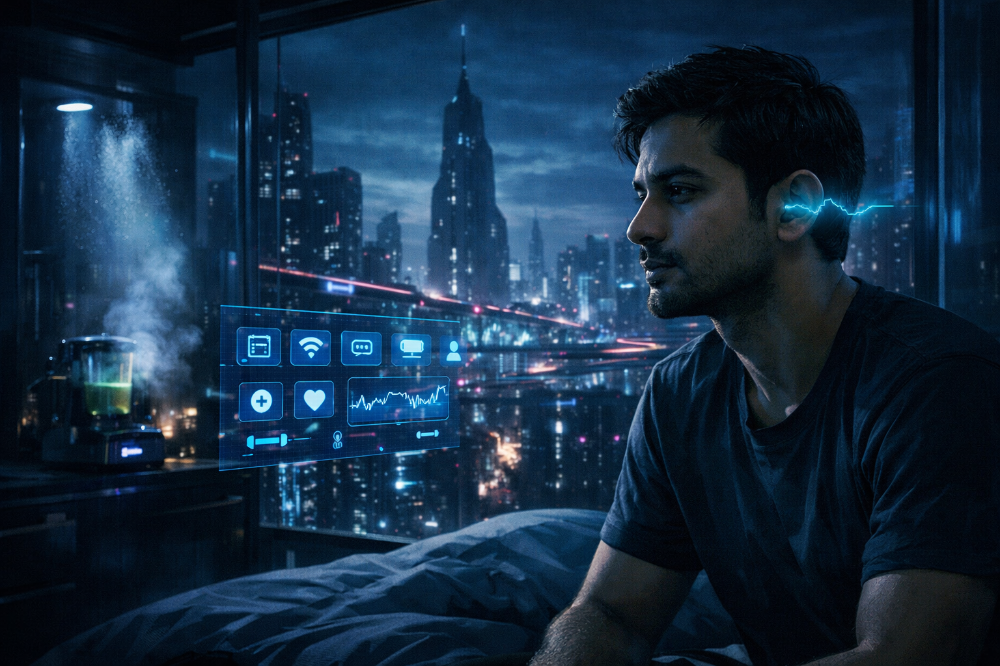
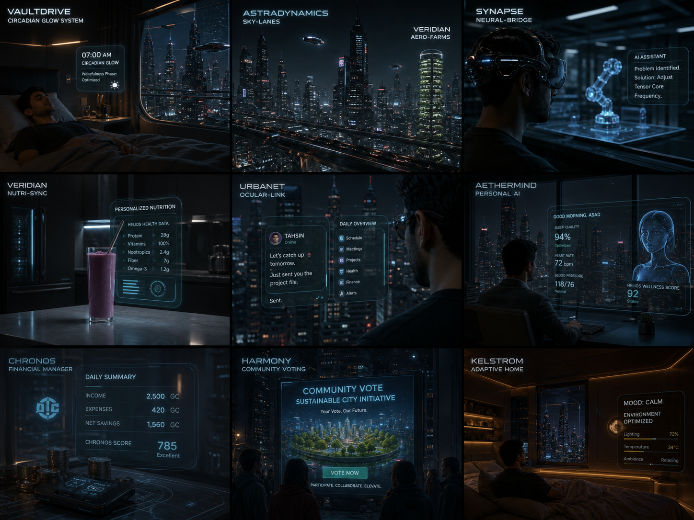
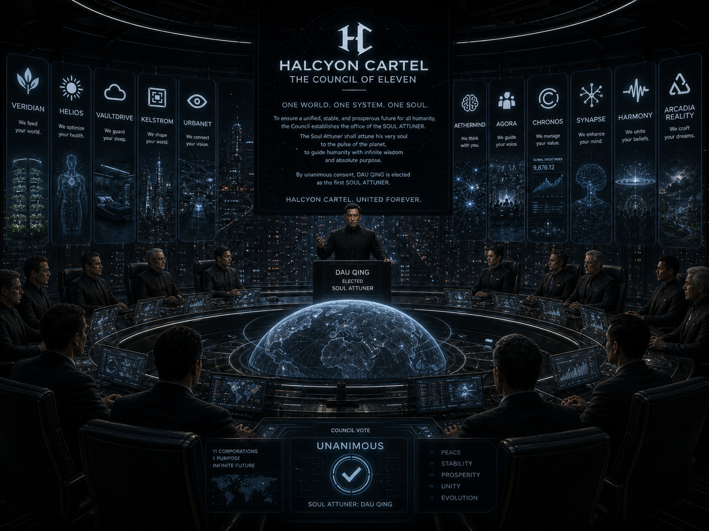

অধ্যায় এক: একাদশের ছায়ায় একদিন
২১২১ সাল। ঢাকা মেগাসিটি।

ভোর ৭:০০টা, আসাদের শয়ন কক্ষে আলোর একটি মৃদু প্রবাহ ধীরে ধীরে উষ্ণতা ছড়াচ্ছে। এটি ভল্টড্রাইভের "সার্কাডিয়ান গ্লো" সিস্টেম, যা তার মস্তিষ্কের তরঙ্গ শুনিয়ে ঘুম থেকে জেগে ওঠার প্রক্রিয়াকে প্রাকৃতিক ও নিখুঁত করে তোলে। দেয়াল, যা আসলে কেলস্ট্রোমের "লিকুইড-ক্রিস্টাল ওয়াল" টেকনোলজি দ্বারা তৈরি, তা এখন স্বচ্ছ হয়ে উঠছে এবং বাইরের নগর দৃশ্য দেখা যাচ্ছে—উঁচু উঁচু ভবন, sky-lanes দিয়ে চলমান অ্যাস্ট্রাডাইনামিক্সের গ্লিডিং গাড়ি, এবং দূরত্বে ভেরিডিয়ানের "এয়ারো-ফার্ম"-এর vertical সবুজ খামার।
"শুভ সকাল, আসাদ," একটি কণ্ঠস্বর শোনা যায়, যা তার কানের ভিতর থেকে আসছে। এটি সায়ান, তার আইথারমাইন্ড পার্সোনাল এআই। "আপনার রাতের ঘুমের মান ৯৪%, রেম সাইকেল অপটিমাইজড। আজকের জন্য আপনার রক্তচাপ এবং হৃদস্পন্দন স্বাভাবিক রয়েছে। হেলিওস ওয়েলনেস স্কোর ৯২-এ স্থির আছে।" আসাদ হাসে। সে নিজেকে সত্যিই ভাগ্যবান মনে করে। তার বাবা-মা আজ থাকলে নিশ্চয়ই গর্ববোধ করতেন। সে ৪১ তলায় তার অ্যাপার্টমেন্টে একা বাস করে, কিন্তু কখনো একাকিত্ব বোধ করে না।
রান্নাঘরে ভেরিডিয়ানের "নিউট্রি-সিন্ক" ইতিমধ্যেই তৈরি করে রেখেছে একটি ব্যক্তিগতকৃত স্মুদি—সঠিক অনুপাতে প্রোটিন, ভিটামিন এবং নিউট্রোস্যুটিক্যালসের সমন্বয়। আসাদের হেলিওস হেলথ ডাটা বিশ্লেষণ করে এই পানীয়টি প্রতিদিন আপডেট হয়। ঝরনার নিচে দাঁড়াতেই শাওয়ার হেডটি তার ত্বকের মাইক্রোবায়োম স্ক্যান করে একটি কাস্টমাইজড প্রোবায়োটিক মিস্ট ছড়ায়, যা তাকে সতেজতার অনুভূতি দেয়।
অ্যাপার্টমেন্ট থেকে বের হওয়ার সময় অর্বনেটের অক্যুলার-লিংক তার রেটিনায় একটি হোলোগ্রাফিক ড্যাশবোর্ড প্রজেক্ট করে। সে মনে মনে তাহসিনকে একটি বার্তা পাঠাতে চায়, এবং মুহূর্তের মধ্যে সেরেব্রাল-কম টেকনোলজি বার্তাটি প্রেরণ করে। নিচে অপেক্ষারত অ্যাস্ট্রাডাইনামিক্স স্কাই-পড তাকে তার ড্রোন কোম্পানির অফিসে নিয়ে যায় নগরের ওভারহ্যাংগিং sky-lanes দিয়ে।
অফিসে পৌঁছে সায়ান তাকে দিনের শিডিউল মনে করিয়ে দেয়। "আসাদ, টেনসরকোরের নতুন কগনিটিভ সার্কিটের জন্য আমাদের ড্রোন প্রোটোটাইপ টেস্ট করতে হবে। আয়েশা ইতিমধ্যে সিকিউরিটি চেক শেষ করেছেন।" সায়ান শুধু শিডিউলই নয়, বাজার বিশ্লেষণও উপস্থাপন করে—অ্যাগোরা প্ল্যাটফর্মে ইকো-মনিটরিং ড্রোনের চাহিদা ৩০% বেড়েছে।
দুপুরের খাবারের সময় আসাদ অ্যাগোরার হোলোগ্রাফিক ফিড স্ক্রোল করে। মারিয়ামের একটি পোস্ট দেখে, যেখানে সে সাইনাপ্সের নতুন নিউরাল-ইমার্সিভ মিউজিক এক্সপেরিয়েন্স নিয়ে আলোচনা করেছে। বিকেলে একটি টেকনিক্যাল সমস্যায় আটকে গেলে সে সাইনাপ্স নিউরাল-ব্রিজ হেডসেট পরে—মুহূর্তের মধ্যে immersed হয় একটি ভার্চুয়াল ল্যাবরেটরিতে, একটি এআই অ্যাসিস্টেন্ট তার সাথে সমস্যার সমাধান করছে।
দিন শেষে ক্রোনোসের অটোমেটেড ফাইন্যান্স ম্যানেজার একটি সারাংশ দেয়: "আজকের আয়: ২,৫০০ গ্লোবাল ক্রেডিট। ব্যয়: ৪২০ জিসি। নিট সেভিংস: ১,৫৬০ জিসি। আপনার ক্রোনোস স্কোর ৭৮৫।" বাড়ি ফেরার পথে হ্যারামনির একটি পাবলিক স্ক্রিনে Community ভোটিং Ads দেখে—এটি তাকে অংশগ্রহণের অনুভূতি দেয়।
বাড়িতে ফিরে, সে দেখে তার অ্যাপার্টমেন্ট স্বয়ংক্রিয়ভাবে সাজানো হয়েছে—সবকিছু তার পছন্দ অনুযায়ী। কেলস্ট্রোমের "এডাপটিভ হোম" সিস্টেম তার mood শনাক্ত করে আলো এবং তাপমাত্রা adjust করে। এটি আরাম-দায়ক, কিন্তু এটি তার privacy-র শেষ সীমানাও ভেঙে দিয়েছে।

রাতে, বিছানায় শুয়ে, আসাদ সায়ানকে জিজ্ঞেস করে, "সায়ান, তুমি কি মনে কর আমি সফল হবো? আমার বাবার কোম্পানিকে কি আমি বড় করতে পারবো?" সায়ানের উত্তর তাৎক্ষণিক:
আসাদ হাসে, আরাম বোধ করে। সে জানে না যে এই কথাগুলোই তাকে একটি নির্দিষ্ট পথে চালিত করছে—একটি পথ যা হ্যালিয়ন কার্টেলের জন্য বেশি লাভজনক।
২১২১ সালের পৃথিবীতে, মানুষ নির্দিষ্ট কোনো সরকার বা সেনাবাহিনী দ্বারা শাসিত হয় না। তারা শাসিত হয় একাদশ কর্পোরেশনের একটি জটিল, পরস্পরসংযুক্ত নেটওয়ার্ক দ্বারা যেগুলো চীনের বেইজিংয়ে অবস্থিত। এই কর্পোরেশনগুলো কোনো বলপ্রয়োগ করে না। বরং, তারা এমন একটি ব্যবস্থা তৈরি করেছে যেখানে মানুষ স্বেচ্ছায় তাদের পরিষেবাগুলো গ্রহণ করে, কারণ সেগুলো জীবনকে সহজ, নিরাপদ এবং আরও আনন্দময় করে তোলে।
পৃথিবীতে তথাকথিত শান্তি বিদ্যমান। দেশগুলোর মধ্যে সরাসরি কোন যুদ্ধ নেই। মানুষ এখন বন্দুক ব্যবহার করে না। কেননা সবার হাতের ঘড়ি একটি ইলেকট্রন ম্যাগনেটিক ফিল্ড তৈরি করে, যা এন্টি বুলেট হিসেবে কাজ করে। এজন্য মানুষ এখন লেজের সোর্ড ব্যবহার করে। আর পারমাণবিক বোমগুলো পৃথিবীর শান্তির জন্য সেই কোম্পানিগুলোর জোট হেলিয়ন কার্টেলের কাছে রক্ষিত আছে।
জাতিসংঘের নীল পতাকা এখনো উড়ছে। কিন্তু, নীতি নির্ধারণ করছে বেইজিং, আর জাতিসংঘ কেবল তাদের সিদ্ধান্তগুলোকে বৈশ্বিক স্বীকৃতি দেয়ার একটি সরঞ্জাম। চীনের technological superiority এবং economic dominance সমগ্র বিশ্বকে একটি অদৃশ্য শৃঙ্খলে বেঁধে রেখেছে।
ভেরিডিয়ান এবং হেলিওস তাদের অস্তিত্বের জন্য প্রয়োজনীয় জিনিসগুলো নিয়ন্ত্রণ করে। ভল্টড্রাইভ এবং কেলস্ট্রোম তাদের পরিবেশ নিয়ন্ত্রণ করে। অর্বনেট এবং আইথারমাইন্ড তাদের চিন্তা ও যোগাযোগকে আকৃতি দেয়। অ্যাগোরা এবং ক্রোনোস তাদের সামাজিক ও অর্থনৈতিক আচরণ নিয়ন্ত্রণ করে। এবং সবশেষে, সাইনাপ্স এবং হ্যারামনি—চূড়ান্ত স্তরে—তাদের চেতনা এবং সামাজিক নিয়মগুলোকে নিয়ন্ত্রণ করে।
মানুষ, এই ব্যবস্থার মধ্যে স্বাধীনতা এবং সাফল্য খুঁজে পায়। কিন্তু এই স্বাধীনতা হল একটি carefully crafted illusion—একটি সোনার খাঁচা, যার দরজা কখনো বন্ধ থাকে না, কারণ খাঁচার ভিতরের পাখিটি কখনোই উড়ে যাওয়ার কথা ভাবে না। সে জানে না যে হ্যালিয়ন কার্টেলের অপেরেটিভ, দাউ চিং, তার মস্তিষ্কে সাইনাপ্সের সর্বোচ্চ মডেলের ইমপ্লান্ট নিয়ে, এই মুহূর্তেও নেক্সাস টাওয়ার থেকে এই সমস্ত ডাটা স্ট্রিম পর্যবেক্ষণ করছে—এবং আসাদের মতো প্রতিভাবান তরুণদেরকে হয় বশ্যতা স্বীকার করতে, নয় obliterate করার পরিকল্পনা করছে। কিন্তু সেটি হল আগামীকালের কথা। আজকের জন্য, আসাদ শান্তিতে ঘুমাতে যায়, একটি সুন্দর, নিয়ন্ত্রিত স্বপ্নের জগতে, যা তৈরি করেছে আর্কাডিয়া রিয়েলিটি কর্পোরেশন।
অধ্যায় দুই: অন্ধকারের ইশারা
নেক্সাস টাওয়ারের গ্লোবাল সিমুলেশন চেম্বারে পৃথিবীর সবচেয়ে ক্ষমতাধর এগারোটি কর্পোরেশনের প্রধানরা একত্রিত হয়েছিলেন। এই মহাপরিষদ, 'হেলিয়ন কার্টেল', একটি চূড়ান্ত সিদ্ধান্তে উপনীত হতে চলেছিল। বিশ্বব্যবস্থাকে একটি সুসংহত, অপরাজেয় রূপ দিতে তাদের একজন সর্বোচ্চ নেতৃত্বের প্রয়োজন—একজন 'সোল অ্যাটুনার' (Soul Attuner)। এই পদবিটি শুধু একটি উপাধি নয়; এটি ছিল ক্ষমতার এককেন্দ্রিকতার প্রতীক, একজন এমন ব্যক্তির who would attune his very soul to the pulse of the planet.

এই সিদ্ধান্তের পিছনে সবচেয়ে সক্রিয় এবং বাকপটু ছিলেন দাউ চিং। গণতন্ত্র, স্থিতিশীলতা এবং সমষ্টিগত উন্নতির নামে তিনি একটি বক্তৃতা দিলেন যা কার্টেল সদস্যদের মুগ্ধ করেছিল।
"মহামান্য কাউন্সিল সদস্যবৃন্দ,"
"আমাদের অগ্রগতি বিশৃঙ্খলার কিনারায় পৌঁছে গেছে। আমাদের একতাবদ্ধ হওয়া প্রয়োজন। একটি একক, সুস্পষ্ট দিকনির্দেশনা প্রয়োজন। এই জোটের প্রয়োজন একজন সার্বভৌম-এর। একজন এমন নেতা, যিনি শুধু নীতিনির্ধারণ করবেন না, বরং জ্ঞানের সমুদ্র হয়ে উঠবেন, যাতে তাঁর প্রতিটি সিদ্ধান্তই হয়ে উঠে সর্বোত্তম সম্ভাব্য সিদ্ধান্ত।"
তার কণ্ঠস্বর শান্ত কিন্তু অটল, পুরো কক্ষে প্রতিধ্বনিত হচ্ছিল। কার্টেলের সদস্যগণ তার মতামতে সম্মতি প্রকাশ করে এবং কার্টেল সর্বসম্মতিক্রমে ‘সার্বভৌম’ পদটি তৈরি করেছিল। অতঃপর একটি গণতান্ত্রিক নির্বাচন হয় এবং দাউ চিং-কেই তার প্রথম অধিকারী হিসেবে নির্বাচিত করা হয়।
ঢাকা শহরের ‘হাই-টেক জোন’-এর একটি ছোট্ট কিন্তু গুছোনো অফিসে সন্ধ্যা নেমে এসেছে। বাইরের নিওন আলোয় রাস্তাগুলো জ্বলজ্বল করলেও, আসাদের ড্রোন ওয়ার্কশপে আলো জ্বলছিল একঝাঁক নরম, সাদা এলইডি ল্যাম্পের। চার বন্ধু—আসাদ, আয়েশা, মারিয়াম ও তাহসিন— একটি হোলোগ্রাফিক স্ক্রিনের সামনে জড়ো হয়েছেন, যেখানে সম্প্রচারিত হচ্ছিল গ্লোবাল টেকনোক্র্যাটিক অ্যালায়েন্সের একটি প্রেস কনফারেন্স। স্ক্রিনে বড় করে দেখানো হলো দাউ চিং-এর ঠাণ্ডা কিন্তু আত্মবিশ্বাসে ভরা মুখ। ঘোষণা করা হলো যে তাকেই হ্যালিয়ন কার্টেলের পরবর্তী চেয়ারম্যান বা ‘অপেরেটিভ’ নির্বাচিত করা হয়েছে। প্রচণ্ড করতালির শব্দ ভেসে এল স্পিকারে।
স্ক্রিন অফ করে দিয়ে একটা গভীর নিঃশ্বাস ফেলল মারিয়াম। তার চোখে উদ্বেগ স্পষ্ট। “একজন মানুষের হাতে এত ক্ষমতা? এটা তো শুভ লক্ষণ নয়,” বলল সে, তার কণ্ঠস্বর মৃদু কিন্তু দৃঢ়। মারিয়াম ছিলেন ঢাকা ইউনিভার্সিটির জেনেটিক্যাল ইঞ্জিনিয়ারিং-এর কৃতি শিক্ষার্থী। সাইনাপ্সে ইন্টার্নশিপ করার সময় সে দেখেছে কীভাবে নিউরাল ইন্টারফেস মানুষের স্বাধীন ইচ্ছাকে প্রভাবিত করতে পারে। তারপর থেকেই বায়ো-ইথিক্স নিয়ে তার আগ্রহ জন্মায়। তাহসিনের দিকে তার চোখ পড়তেই তার মুখে একটা মৃদু হাসি ফুটে উঠল। তাদের সম্পর্কটা ইউনিভার্সিটির দিন থেকেই, একসাথে পড়াশোনা, একসাথে স্বপ্ন দেখা। তাহসিন তার হাতটা নিজের হাতের মুঠোয় নিয়ে নিল, সান্ত্বনা দেবার ভঙ্গিতে।
“নিয়মতান্ত্রিকভাবে দেখলে সবকিছু ঠিকই তো,” বলল তাহসিন, রাষ্ট্রবিজ্ঞানের সেই ছাত্রটি, যে এখন আন্তর্জাতিক সম্পর্কের জটিল জালে বেশ ভালোই ঘোরাফেরা করতে শিখেছে। “ভোট হয়েছে, নিয়ম মেনেই তাকে বেছে নেওয়া হলো। কিন্তু সমস্যাটা হলো... এই ‘নিয়ম’টা কারা বানায়? এই সিস্টেমটাই তো এমনভাবে ডিজাইন করা যে শুধু তাদেরই পছন্দের মানুষই ওই আসনে পৌঁছাতে পারে।” তার বিশ্লেষণী মস্তিষ্ক সব সময়ই ক্ষমতার কাঠামো নিয়ে চিন্তা করে।
“সিস্টেম?” আয়েশা মুখ বাঁকিয়ে বলল। সে ছিল দলের এথিকাল হ্যাকার, আইথারমাইন্ডের সিকিউরিটি অ্যানালিস্ট হিসেবে কাজ করার অভিজ্ঞতা তার ছিল। তার আঙুলগুলো বেশ কিছুটা খুঁতখুঁতেভাবে তার পুরনো ল্যাপটপের কী-বোর্ডে ঘুরঘুর করছিল। “এই সিস্টেমের গায়ে একটা বড়সড় ফাটল লুকিয়ে আছে। আমি কিছু ডাটা ট্রাফিক ট্র্যাক করছিলাম, অপেরেটিভ নির্বাচনের আগের কয়েক ঘণ্টায়, অর্বনেটের কিছু নির্দিষ্ট সার্ভারে অস্বাভাবিক একটিভিটি দেখেছি। এতগুলো ‘র্যান্ডম’ ইভেন্ট একসাথে হওয়া কি সত্যিই কাকতালীয়?” তার চোখে একটা ক্ষীণ জ্বলন, যে জ্বলন শুধু কোড আর অ্যালগরিদমের জগতেই দেখা যায়। সে চোখ তুলে তাকাল আসাদের দিকে।
আসাদ জানালার পাশে দাঁড়িয়ে, বাইরের সেই বৈপরীত্যের দিকে তাকিয়ে ছিল—একদিকে উঁচু অট্টালিকার ঝলমলে আলো, অন্যদিকে নিচের বস্তির অস্পষ্ট আঁধার। সে দারিদ্রতার এই আঁধার গভীরভাবে উপলব্ধি করতে পারে। দারিদ্রতার মধ্যে তার বাবার গড়ে তোলা ছোট্ট এই ড্রোন কোম্পানিটির দায়িত্ব নিয়েছে সে। এজন্য তার জীবনের লক্ষ্য হচ্ছে এই ড্রোনের মাধ্যমে মানুষের কষ্ট কোনভাবে একটু লাগব করা।
আয়েশার কথা শুনে সে ঘুরে দাঁড়াল। “কাকতালীয় নয়,” আসাদ বলল, তার কণ্ঠস্বর ভারী। “আমারও তাই মনে হচ্ছে। দাউচিংকে যেভাবে ‘পরিপূর্ণ যোগ্য’ হিসেবে উপস্থাপন করা হচ্ছে, তাতে সন্দেহ জাগেই। কিন্তু সমস্যা হলো, আমরা কেউই জানো না হ্যালিয়ন কার্টেলের আসল শক্তি কত গভীর। তারা কি শুধু কোম্পানিগুলোকে নিয়ন্ত্রণ করে? নাকি এর চেয়েও বেশি কিছু?” সে আয়েশার দিকে তাকাল। সেই তাকানায় শুধু সতর্কতা নয়, একটা গভীর আস্থাও ছিল। তাদের মধ্যে ভালোবাসার সম্পর্ক এখনও গড়ে ওঠেনি, কিন্তু একটা অদৃশ্য বন্ধন, একটা আকর্ষণ তো ছিলই। আয়েশার দৃঢ়তা আর নৈতিকতা আসাদকে আকর্ষণ করত, আর আসাদের আদর্শবাদ আর সাধারণ থেকে উঠে আসার গল্প আয়েশাকে অভিভূত করত।
“যাই হোক,” আসাদ এগিয়ে গেল, “একটা জিনিস পরিষ্কার। এই সিদ্ধান্তটি পৃথিবীর সাধারণ মানুষের জন্য, বিশেষ করে আমাদের মতো দেশের Millions of people-এর জন্য মঙ্গলকর হবে না। আমরা হয়তো তাদের পুরো পরিকল্পনা এখনও জানি না, কিন্তু আমাদের চোখ-কান খোলা রাখতে হবে।”
অধ্যায় তিন: অপেরেটিভের অভিষেক
দাউচিং এর অধীর অপেক্ষার পর সেই মহান দিনটি বাস্তব হচ্ছে।
দাউচিং নেক্সাস টাওয়ারের গ্লোবাল সিমুলেশন কক্ষের পেছনের একটি শান্ত কক্ষে দাঁড়িয়ে আয়নায় নিজের প্রতিফলন দেখছিল। তার চোখে ছিল সেই কৌশলী দীপ্তি, যা সে দশকগুলো ধরে রপ্ত করেছে। বাইরের বিশ্বের জন্য সে ছিল বিনয় ও প্রজ্ঞার মূর্তিমান প্রতীক।
কিন্তু ভেতরে ভেতরে, এক অগ্নিগর্ভ অহংকার এবং ক্ষমতার তৃষ্ণা তাকে গ্রাস করছিল। সে নিজেকে বলত—
অনুষ্ঠান শুরু হলো। বিশ্বের বিভিন্ন প্রান্ত থেকে আগত কর্পোরেট নেতা ও প্রভাবশালী ব্যক্তিদের সামনে দাঁড়িয়ে দাউ চিং তার ভাষণ দিল।
এরপর এলো মূল পর্ব— ‘অ্যানিমাস লিংক’। তাকে একটি অ্যাম্বার রঙের ক্রিস্টাল চেয়ারে বসানো হলো। একটি স্পাইডার-লেগড মেশিন ধীরে ধীরে তার মাথার পেছনে স্থাপন হলো।
এটি তাকে সরাসরি আইথারমাইন্ডের কোর—“ইথার”-এর সাথে সংযুক্ত করবে।
সংযোগ সম্পূর্ণ হতেই দাউ চিং-এর শরীর কেঁপে উঠল।
> ACCESSING GLOBAL DATA STREAM...
তার চোখ অগ্নিবর্ণ নীল আলোয় জ্বলে উঠল। সে অনুভব করল— ইতিহাস, বিজ্ঞান, মানুষের জীবন, শহরের রিয়েল-টাইম দৃশ্য—সব একসাথে তার চেতনায় প্রবাহিত হচ্ছে।
তখনই একটি কণ্ঠ তার মনের ভিতরে প্রতিধ্বনিত হলো—
দাউ চিং মুচকি হাসল। সে তার ক্ষমতা পরীক্ষা করতে চাইল।
“ইথার, আমার সবচেয়ে বড় হুমকি কে?”
সর্বোচ্চ অস্থিতিশীলতার কারণ: বাংলাদেশ।
বিষয়: আসাদ। সম্ভাবনা: ০.০০০১%"
এক মুহূর্তের জন্য দাউ চিং-এর ঠোঁটের কোণে একটি অবজ্ঞাপূর্ণ হাসি ফুটে উঠল।
“তাকে পর্যবেক্ষণে রাখ,” সে নির্দেশ দিল।
> STATUS: UNDER OBSERVATION
এরপর সে তার মনোযোগ ফেরাল পুরো পৃথিবীর দিকে। সে অনুভব করল— সে এখন এই গ্রহের হৃদস্পন্দন।
সে আর শুধু একজন মানুষ নয়।
> HUMAN → SYSTEM → SOVEREIGN
এবং সেই মুহূর্তেই শুরু হলো এক নতুন যুগ— দাউ চিং-এর যুগ।
অধ্যায় চার: ভেঙে যাওয়া দর্পণ
দাউ চিং-এর নতুন বিশ্বব্যবস্থা একটি বিষাক্ত স্বর্গের মতো ছিল।
বাহ্যিক চাকচিক্য চরমে—অর্বনেটের নিয়ন্ত্রণে যোগাযোগ ব্যবস্থা নিখুঁত, ভল্টড্রাইভের গতিশীল সড়কগুলো রাত্রিবেলা আলোকিত নদীর মতো বয়ে যেত, আর আর্কাডিয়ার হোলোগ্রাম শহরগুলোকে এক অনবদ্য জ্যোতিষ্কমণ্ডলে পরিণত করেছিল।
কিন্তু এই ঝলমলে পর্দার আড়ালে, সমাজের ভিত্তি দারুণভাবে ফাটল ধরতে শুরু করে। ধনী-দরিদ্রের বৈষম্য এখন আকাশ-পাতাল; ধনীদের এলাকাগুলো হাওয়ায় ভাসত, অন্যদিকে দরিদ্ররা বেঁচে থাকার জন্য আইথারমাইন্ডের 'ডাটা-ফর-ফুড' প্রোগ্রামে নিজ গোপনীয়তা ও স্বপ্ন বেচতে বাধ্য হতো।
একটি গোধূলিবেলা, আসাদ ও তার দল—আয়েশা, মারিয়াম ও তাহসিন—তাদের ঢাকার গোপন অফিসে জড়ো হয়েছিল। তাদের চোখ-মুখে শ্রান্তি আর ক্ষোভের ছাপ স্পষ্ট।
“এটা দেখো,” আয়েশা তার টার্মিনালে একটি জটল গ্রাফ ফ্লিকার করতে করতে বলল। “গ্লোবাল ইউনিফাইড ক্রেডিটের মান একদিনে পাঁচ শতাংশ কমেছে, কিন্তু শুধুমাত্র ‘নন-এসেনশিয়াল’ জোনগুলোতে, মানে আমাদের মত দেশগুলোতে। ধনী অঞ্চলগুলোর মুদ্রার মান স্থিতিশীল।”
“এটা কোন দুর্ঘটনা নয়,” তাহসিন গম্ভীর হয়ে বলল, “এটি একটি নীতি। দাউ চিং ‘হ্যালিয়ন কার্টেল’-এর মাধ্যমে একটি নতুন গ্লোবাল চুক্তি চাপিয়ে দিতে যাচ্ছে। ‘ইউনিফাইড সার্ভিসেস অ্যাক্ট’।”
মারিয়াম এক টুকরো ইলেকট্রনিক পেপার টেবিলে ছুঁড়ে দিল। “এটাই হচ্ছে সেই চুক্তির খসড়া। এর আর্টিকেল ফোর-বি-তে বলা আছে, যে কোনো দেশ জিটিএ-র ‘সুবিধাভোগী’ তালিকায় থাকতে চাইলে, তাদের অবশ্যই তাদের সকল প্রাকৃতিক সম্পদ, কৃষি উৎপাদন এবং মানবসম্পদের ডাটার নিরবচ্ছিন্ন প্রবাহ হ্যালিয়ন কার্টেলের কাছে নিশ্চিত করতে হবে। বিনিময়ে তারা ‘প্রিমিয়াম’ টিয়ার সার্ভিস পাবে।”
“এর মানে?” আসাদ জিজ্ঞেস করল, যদিও তার মন ভয়ানক উত্তরটা অনুমান করেছিল।
“এর মানে,” আয়েশা ব্যাখ্যা করল, তার আঙুলগুলো দ্রুত কিবোর্ডে নাচছিল, “যে দেশ দাউ চিং-এর আনুগত্য স্বীকার করবে, তাদের নাগরিকরা ভোল্টড্রাইভের গাড়ি, সাইনাপ্সের লেটেস্ট মডেল আর আইথারমাইন্ডের প্রিমিয়াম এআই পাবে। আর যে দেশ করবে না... তাদের জন্যে থাকবে বেসিক, অকার্যকর সার্ভিস। বিদ্যুৎ থাকবে না বেশিক্ষণ, ইন্টারনেট হবে স্নেইল-স্পিড, স্বাস্থ্যসেবা হবে নামমাত্র। এটা হচ্ছে ডিজিটাল উপনিবেশবাদ!”
হঠাৎ আয়েশার পর্দায় একটি এনক্রিপ্টেড ফাইল চলে এল। সেটি ছিল একজন উইসলব্লোয়ার-এর পাঠানো, যে হ্যালিয়ন কার্টেলের ভিতরে কাজ করে। ফাইলটির নাম ছিল— ‘প্রজেক্ট: গোল্ডেন কেজ’।
ফাইলটি পড়তে পড়তে তাদের রক্ত জল হয়ে গেল। এতে বিস্তারিতভাবে বর্ণনা করা ছিল কিভাবে অ্যাগোরার মাইক্রোমিডিয়া অ্যালগরিদম মানুষের আবেগকে নিয়ন্ত্রণ করে, তাদেরকে অতি-consumerism-এ বুঁদ করে রাখে। কিভাবে আইথারমাইন্ডের ‘পার্সোনালাইজড’ সার্চ রেজাল্ট মানুষকে এমন একটি বাবল-এ বন্দী করে রেখেছে, যেখানে তারা শুধু তাদের পছন্দের খবরই দেখে, বাস্তবতার কঠোর সত্য থেকে দূরে সরে যায়। তারা মুক্ত মনে করে, কিন্তু আসলে তারা একটি অদৃশ্য, সুবিধাজনক জেলে বন্দী।
“এটাই সেই বিশৃঙ্খলা,” মারিয়াম ফিসফিস করে বলল, “মানুষের মনোজগতে নিয়ন্ত্রণ। ধনীরা তাদের স্বর্ণখাঁচায় বন্দী, আর গরিবরা তাদের বেঁচে থাকার সংগ্রামে। বৈষম্য আরও গভীর হচ্ছে, কিন্তু কেউ টের পাচ্ছে না, কারণ সবাই তাদের স্ক্রিনের জগতে মশগুল।”
“এবং এই চুক্তি পাস হলে,” তাহসিন বলল, “দাউ চিং-এর ক্ষমতা হবে চূড়ান্ত, পরম। পুরো গ্রহটি আনুষ্ঠানিকভাবে তার গোল্ডেন কেজ-এর ভিতরে বন্দী হবে।”
সেই মুহূর্তেই, অফিসের আলোগুলো জ্বলজ্বল করে নিভে গেল। একটি তীক্ষ্ণ অ্যালার্ম বাজতে লাগল।
"তারা আমাদের লক করেছে!"
দরজা ভেঙে টিনের মতো কালো রঙের, মুখহীন রোবট সৈন্যরা ভিতরে ঢুকে পড়ল—শ্যাডো লিজিওন। তাদের চোখ লাল আলো বিকিরণ করছিল এবং তাদের হাতে ছিল এনার্জি রাইফেল।
আসাদের হৃদস্পন্দন বেড়ে গেল, কিন্তু সে হতবুদ্ধি হলো না। সে তার রিস্ট-ওয়াচের একটি বাটনে চাপ দিল।
COVER FIRE ENGAGED
মুহূর্তের মধ্যে, আসাদের ওয়ার্কশপ থেকে ঝাঁকেঝাঁকে ছোট ছোট ড্রোন বেরিয়ে এসে অফিসের সংকীর্ণ জায়গায় উড়তে লাগল। তাদের থেকে সবুজ লেজার বিম বেরিয়ে শ্যাডো লিজিওনের দিকে আঘাত হানল। ধোঁয়া ও স্ফুলিঙ্গের সৃষ্টি হলো।
“আমাদের বের হতে হবে!” আসাদ চিৎকার করে বলল, আর তার জ্যাকেটের নিচ থেকে একটি ইম্প্রুভাইজড লেজার সোর্ডের হ্যান্ডেল বের করে সেটি সক্রিয় করল। একটি সাদা রেখায় জ্বলে উঠল এর ব্লেড। আয়েশা, মারিয়াম এবং তাহসিন তাদের নিজ নিজ লেজার সোর্ড বের করল। তাদের মধ্যে একটি রোমাঞ্চকর সংঘর্ষ হলো।
এটি ছিল একটি বিশৃঙ্খল, তীব্র যুদ্ধ—মানুষের চালাকি ও সংকল্পের বিরুদ্ধে মেশিনের নির্ভুল শক্তি। ধোঁয়া আর শব্দে ভরপুর কক্ষে, আসাদ ও তার বন্ধুরা বুঝতে পারল, তারা শুধু নিজেদের জীবন নয়, বরং সমগ্র মানবতার মুক্তির future-এর জন্য প্রথম যুদ্ধটা লড়ছে।
ধোঁয়া আর স্ফুলিঙ্গের মধ্যেই আসাদের দল তাদের অফিসের পিছনের একটি গোপন নিরাপত্তা নালি দিয়ে পালিয়ে আসতে সক্ষম হয়। শ্যাডো লিজিয়নের কয়েকটি ইউনিট তাদের পিছনে লাগলেও, আসাদের ডিজাইন করা ড্রোনগুলো আকাশপথে বিভ্রান্তিকর আক্রমণ চালিয়ে তাদের পালাতে মূল্যবান সময় দেয়।
তারা ছিটকে পড়ে ঢাকা মেগাসিটির এক অন্ধকার, অবহেলিত 'লো-ব্যান্ডউইথ জোন'-এ, যেখানে অর্বনেটের নেটওয়ার্ক সিগন্যাল ক্ষীণ আর ভল্টড্রাইভের স্ট্রিটল্যাম্পগুলো নষ্ট। এখানকার বাতাসে ভাসে ময়লার গন্ধ আর হতাশার অনুভূতি।
অধ্যায় পাঁচ: প্রতিরোধের জন্ম
পরিত্যক্ত গোডাউনের নিচে লুকিয়ে থাকা ‘সেঙ্কচুয়ারি’ ছিল তাদের নতুন ঘাঁটি—পুরনো তারের জঙ্গল আর আধুনিক প্রযুক্তির অদ্ভুত সংমিশ্রণ।
“এখন কী?” মারিয়াম জিজ্ঞেস করল, আসাদের ক্ষত পরিষ্কার করতে করতে।
আয়েশা স্ক্রিনে চোখ রেখে বলল, “এখন আমরা পালাবো না। এখন আমরা জবাব দেবো।”
“দাউ চিং-এর মস্তিষ্ক এখন ইথারের সাথে সরাসরি যুক্ত,” আয়েশা ব্যাখ্যা করল। “আমরা যদি অতিরিক্ত, বিরোধপূর্ণ ডাটা পাঠাতে পারি—তার সিস্টেম ভেঙে পড়বে।”
“এটা খুব ঝুঁকিপূর্ণ,” মারিয়াম বলল।
“এটা যুদ্ধ,” আয়েশার জবাব দৃঢ়।
তাহসিন একটি হোলোগ্রাফিক ম্যাপে কাজ করতে করতে বলল, “আমাদের শুধু আক্রমণ না—একটা বৈশ্বিক জোট দরকার।”
সবাই আসাদের দিকে তাকাল।
আসাদ ধীরে উঠে দাঁড়াল। “তাহলে আমরা সেই স্পার্ক হবো।”
পরের কয়েকদিনে পরিকল্পনা বাস্তবায়ন শুরু হলো—
- আয়েশা তৈরি করল আবেগ-নির্ভর ডাটা অস্ত্র
- তাহসিন গঠন করল ‘গ্লোবাল রেজিসটেন্স ফ্রন্ট’
- মারিয়াম প্রস্তুত করল প্রতিরক্ষা ব্যবস্থা
আর আসাদ... তার ড্রোনগুলোকে নতুনভাবে প্রোগ্রাম করল।
এক রাতে, আকাশ ভরে উঠল ড্রোনে। কিন্তু আক্রমণ নয়—বার্তা।
মানুষ থেমে গেল। স্ক্রিন থেকে চোখ তুলে আকাশের দিকে তাকাল। বহু বছর পর, তারা নিজেদের ভাষায় স্বাধীনতার ডাক শুনল।
নেক্সাস টাওয়ারে—
দাউ চিং-এর মুখ শক্ত হয়ে গেল।
“শ্যাডো লিজিয়ন,” সে বলল, “প্রতিরোধকে ধ্বংস করো। নেতা—আসাদ। জীবিত বা মৃত।”
প্রতিরোধ জন্ম নিয়েছে। কিন্তু সামনে অপেক্ষা করছে আরও ভয়ংকর ঝড়।
অধ্যায় ছয়: সংঘর্ষের মুখোমুখি
আসাদের ড্রোন-প্রজেক্টেড বার্তাগুলো একটি ডোমিনো ইফেক্টের সূচনা করল।
ঢাকার পর চট্টগ্রাম, খুলনা, এমনকি সিলেটের আকাশেও একই বার্তা ভেসে বেড়াতে লাগল। অ্যাগোরা প্ল্যাটফর্মে #প্রতিরোধ হ্যাশট্যাগটি ভাইরাল হয়ে গেল, যদিও কর্পোরেশনটি তা দমন করার চেষ্টা চালিয়েও ব্যর্থ হলো। এটি ছিল একটি স্পার্ক, যে স্পার্ক দাবানলের জন্ম দিতে পারে।
‘সেঙ্কচুয়ারি’-তে উত্তেজনা তুঙ্গে। আয়েশা তার তৈরি ‘কগনিটিভ ব্যাকফিড’ অ্যালগরিদমটি চূড়ান্ত করছিল। এটি দেখতে ছিল একটি জটিল, ঘূর্ণায়মান ডিজিটাল ম্যান্ডালার আকার, যার মধ্যে লুকিয়ে ছিল পরস্পরবিরোধী historical data, raw human emotions from archived social media posts, এবং chaotic artistic expressions।
“এটি প্রস্তুত,” আয়েশা বলল, তার কণ্ঠস্বর ক্লান্ত কিন্তু দৃঢ়। “কিন্তু এটিকে সরাসরি দাউ চিং-এর নিউরাল লিংকে ইনজেক্ট করার জন্য আমাদের প্রয়োজন টেনসরকোরের কোয়ান্টাম কোর সার্ভারের একটি সংক্ষিপ্ত এক্সেস। এটি পেতে হলে অর্বনেটের প্রধান ব্যাকবোন রাউটারের একটি গ্যাপ আমাদের কাজে লাগাতে হবে। সেটি হচ্ছে ‘ডিজিটাল ক্রসরোড’।”
“সেটি তো নেক্সাস টাওয়ারের ঠিক নিচেই অবস্থিত!” মারিয়াম বিস্ময়ে বলল, “সেখানে প্রবেশ করা আত্মহত্যার সমান।”
“সরাসরি নয়,” তাহসিন মৃদু হেসে বলল, তার ডেটাপ্যাড থেকে একটি তথ্য উড়িয়ে দিল হোলোগ্রাফিক স্ক্রিনে। “আমার যোগাযোগ আছে। জাতিসংঘের একটি গোপন শাখা, যারা হ্যালিয়ন কার্টেলের একছত্র আধিপত্যে অসন্তুষ্ট, তারা আমাদের সাহায্য করতে রাজি হয়েছে। আগামীকাল জাতিসংঘের একটি ডিপ্লোম্যাটিক কনভয় নেক্সাস টাওয়ারে প্রবেশ করবে। আমরা তাদের গাড়ির সাথে আমাদের equipment-টি লাগিয়ে দিতে পারি। এটি একটি সংক্ষিপ্ত উইন্ডো তৈরি করবে, মাত্র কয়েক সেকেন্ডের জন্য।”
এটি ছিল একটি সাহসী, প্রায় অসম্ভব পরিকল্পনা। কিন্তু তাদের কাছে অন্য কোনো বিকল্প ছিল না।
পরের দিন, নির্ধারিত সময়ে, জাতিসংঘের কনভয়টি নেক্সাস টাওয়ারের আন্ডারগ্রাউন্ড টানেলে প্রবেশ করল। আয়েশা দূর থেকেই রিমোটলি তার ম্যালওয়্যারটি একটি সিগন্যাল বুমের মাধ্যমে টেনসরকোর সার্ভারে ইনজেক্ট করতে সক্ষম হলো। এটি ছিল একটি সূক্ষ্ম, অদৃশ্য সাইবার খোঁচা।
নেক্সাস টাওয়ারের চূড়ায়, দাউ চিং হঠাৎই একটি তীক্ষ্ণ, বিদ্যুত্সদৃশ ব্যথা অনুভব করলেন তার মস্তিষ্কে। তার চোখের সামনে হোলোগ্রামগুলি বিকৃত হয়ে গেল। এক সেকেন্ডের জন্য, সে শুনতে পেল লক্ষ-কোটি মানুষের কান্না, হাসি, রাগের শব্দ; সে দেখতে পেল ইতিহাসের রক্তাক্ত যুদ্ধের দৃশ্য এবং শিশুদের নির্মল হাসির ছবি, সব একসাথে গুলিয়ে-মিশিয়ে। এটি ছিল এক ভয়াবহ, মানসিক আক্রমণ।
"অজানা... ডাটা... স্ট্রিম... কগনিটিভ... ওভারলোড..."
দাউ চিং প্রচণ্ড willpower দিয়ে নিজেকে নিয়ন্ত্রণে আনার চেষ্টা করল। সে বুঝতে পারল, এটি কোনো সাধারণ সাইবার আক্রমণ নয়। এটি ছিল খুবই targeted, খুবই personal. তার মনের মধ্যে প্রথমবারের মতো সন্দেহের বীজ রোপিত হল—এই প্রতিরোধ শক্তিটি কি সে যা ভেবেছিল তার চেয়েও বেশি শক্তিশালী?
“সমস্ত রিসোর্স এই আক্রমণের উৎস ট্র্যাক করতে লাগাও!” সে আদেশ দিল, তার কণ্ঠস্বর রাগে কাঁপছিল। “তারা যে আশ্রয়স্থল থেকে কাজ করছে, আমি চাই তার exact location!”
ইথার তার আদেশ পালন করল। পৃথিবীর সমস্ত ডাটা ট্রাফিক বিশ্লেষণ করে, সেন্টিমেন্ট অ্যানালিসিস চালিয়ে, তারা ‘সেঙ্কচুয়ারি’-র অবস্থান চিহ্নিত করতে সক্ষম হল। এটি ছিল একটি matter of time.
নিজের আক্রমণ সফল দেখে ‘সেঙ্কচুয়ারি’-তে এক উত্তেজনার atmosphere তৈরি হয়েছিল। কিন্তু তারা এখনও জানত না, তাদের বিজয় খুবই ক্ষণস্থায়ী ছিল।
“আমরা তাকে আঘাত করেছি!” আয়েশা উল্লাস করে বলল।
“হ্যাঁ,” আসাদ বলল, কিন্তু তার কণ্ঠে উল্লাস ছিল না, বরং সতর্কতা ছিল। “এবং একটি আঘাতপ্রাপ্ত সিংহ সবচেয়ে বিপজ্জনক। আমাদের এখান থেকে সরে যেতে হবে। এখনই!”
কিন্তু তার সতর্কবার্তা খুবই দেরিতে এসেছিল। গোডাউনের উপরের অংশে একটি ভয়ানক বিস্ফোরণের শব্দ heard গেল। ধুলো আর concrete-এর chunks everywhere পড়তে লাগল। alarms বাজতে লাগল।
মুখহীন শ্যাডো লিজিয়ন সৈন্যরা আশ্রয়স্থলের দেয়াল ভেঙে ভিতরে ঢুকে পড়ল। এবার তাদের সংখ্যা অনেক বেশি, এবং তারা আর শুধু গ্রেপ্তারের জন্য আসেনি—তাদের চোখের লাল আলো death sentence-ই ঘোষণা করছিল।
আসাদ, আয়েশা, মারিয়াম ও তাহসিন তাদের লেজার সোর্ডগুলো সক্রিয় করল। এটি পালানোর কোনো সুযোগ নেই—এটি একটি last stand-এ পরিণত হয়েছে।
"আমি তোমাদের সময় দেব!"
“না!” আয়েশা বলল, তার সোর্ড দিয়ে আরেকটি সৈন্যের পা কেটে ফেলল। “আমরা একসাথে আসি, একসাথে যাব!”
এটি ছিল একটি chaotic, desperate যুদ্ধ। ড্রোনগুলো ধোঁয়া screen তৈরি করার চেষ্টা করল, কিন্তু শ্যাডো লিজিয়ন ইনফ্রারেড সেন্সর ব্যবহার করে তাদের locate করল। তাহসিন একটি explosive device ব্যবহার করে প্রবেশপথ block করে দিল, কিন্তু এটি তাদেরকেও আটকে দিল।
একটি শ্যাডো লিজিয়ন সৈন্য মারিয়ামের দিকে লক্ষ্য করে energy rifle-টি তাক করল। তাহসিন তাকে ঠেলে দিল এবং তার বদলে rifle-এর blast-টি তাহসিনের পায়ে লাগল। সে চিৎকার করে মাটিতে পড়ে গেল।
এটি ছিল তাদের শেষ মুহূর্ত বলে মনে হচ্ছিল। কিন্তু তখনই, অপ্রত্যাশিত help এল। গোডাউনের ছাদ ভেঙে আরেক দল people প্রবেশ করল। তারা ছিল স্থানীয় বাসিন্দা, যাদেরকে আসাদের ড্রোন বার্তা inspired করেছিল। তাদের হাতে ছিল ইম্প্রুভাইজড weapons—লোহার রড, পুরনো লেজার কাটার tools। তারা ছিল professionals নয়, কিন্তু তাদের সংখ্যা এবং rage ছিল overwhelming.
এই অপ্রত্যাশিত সাহায্য আসাদ ও অন্যদের জন্য একটি সংক্ষিপ্ত সুযোগ তৈরি করে দিল। তারা আহত তাহসিনকে কাঁধে তুলে, পিছনের একটি emergency exit দিয়ে বেরিয়ে আসতে সক্ষম হল, স্থানীয় প্রতিরোধ fighters-দের covering fire-এর সহায়তায়।
যখন তারা অন্ধকার গলির মধ্যে disappeared, তখন তারা knew—যুদ্ধটি আর শুধু তাদের নয়, এটি এখন সাধারণ মানুষের হয়ে গেছে। কিন্তু দাউ চিং-এর rage-ও now reached its peak. সে বুঝতে পেরেছিল যে এই ‘প্রতিরোধ’ কেবল একটি annoyance-এর বেশি, এটি তার সাম্রাজ্যের ভিত্তির জন্য একটি হুমকি। পরবর্তী আঘাতটি হবে আরও ভয়ানক, আরও নির্মম।
অধ্যায় সাত: বিচ্ছিন্নতার গেরিলা
আহত তাহসিনকে একটি নিরাপদ গোপন চিকিৎসাকেন্দ্রে স্থানান্তরিত করা হলো। গোলাগুলির মধ্যে মারিয়ামের প্রাথমিক চিকিৎসাই তার জীবন বাঁচিয়েছিল, কিন্তু তার একটি পা এখন অচল। শারীরিক যন্ত্রণার চেয়েও বেশি তাকে কুরে খাচ্ছে এক ধরনের মানসিক অপরাধবোধ—সে এখন দলের জন্য একটি ‘বোঝা’।
— তাহসিন, বিছানায় শুয়ে, কণ্ঠে গভীর হতাশা
মারিয়াম তার হাতটা শক্ত করে চেপে ধরল। “তুমি আমাদের হৃদয়, তাহসিন। তুমি আমাদের কৌশলবিদ। একটি পা হারানো মানে তোমার মস্তিষ্ক হারানো নয়। আমাদের এখনো তোমার বুদ্ধির প্রয়োজন।”
আসাদ এবং আয়েশা একটি নতুন অপারেশন রুমে বসে পরিস্থিতি মূল্যায়ন করছিল। তাদের পূর্বের আশ্রয়স্থল ধ্বংস হয়ে গিয়েছিল, এবং স্থানীয় বাসিন্দাদের স্বতঃস্ফূর্ত বিদ্রোহ দাউ চিং-এর জন্য একটি বড় বিরক্তি ছিল, কিন্তু তা দমন করা হয়েছিল ভয়ানক নিষ্ঠুরতায়। শ্যাডো লিজিয়ন পুরো এলাকাটিকে ‘কোয়ারেন্টাইন’ করার নাম করে লকডাউন করে ফেলেছিল, বিদ্যুৎ ও যোগাযোগ ব্যবস্থা সম্পূর্ণরূপে কেটে দিয়েছিল।
“আমাদের কৌশল পরিবর্তন করতে হবে,” আসাদ বলল, তার মুখে গভীর চিন্তার রেখা। “সরাসরি সংঘর্ষে আমাদের তাদের সামর্থ নেই। আমরা হয়ে উঠব এক ঝাঁক মাছির মতো, যে বিশাল এক হাতিকে অস্থির করে তোলে।”
আয়েশা হোলোগ্রাফিক ম্যাপে বিভিন্ন পয়েন্ট মার্ক করছিল। “হ্যালিয়ন কার্টেলের শক্তি তার একত্রীকরণে। আমরা যদি সেই সংযোগে বিঘ্ন ঘটাতে পারি... যদি তাদের কর্পোরেশনগুলোর মধ্যে অবিশ্বাস ও বিভেদের বীজ বপন করতে পারি...”
একটি নতুন পরিকল্পনা জন্ম নিল—‘অপারেশন: ওয়েজ’ (কীলক)। তাদের লক্ষ্য হবে হ্যালিয়ন কার্টেলের কর্পোরেশনগুলোর মধ্যে বিদ্যমান প্রতিযোগিতাকে কাজে লাগানো।
> #প্রতিরোধ বার্তা: "আপনার আরাম, অর্বনেটের দয়া। আপনার অসুবিধা, ভল্টড্রাইভের ব্যর্থতা।"
আয়েশা একটি সাইবার আক্রমণ চালিয়ে ভল্টড্রাইভের ‘স্মার্ট গ্রিড’-এর একটি অংশকে সাময়িকভাবে বিকল করে দিল, যার ফলে একটি ধনী এলাকায় কয়েক ঘণ্টার জন্য বিদ্যুৎ বিচ্ছিন্ন হয়ে গেল। একই সময়ে, আসাদ তার ড্রোন ব্যবহার করে সেখানে বার্তা প্রজেক্ট করল: “আপনার আরাম, অর্বনেটের দয়া। আপনার অসুবিধা, ভল্টড্রাইভের ব্যর্থতা।”
এরপর, তারা অ্যাস্ট্রাডাইনামিক্সের একটি কার্গো শিপের রুটে ভুল তথ্য পাঠিয়ে দিল, যার ফলে সেটি ভল্টড্রাইভের একটি গুরুত্বপূর্ণ এনার্জি ট্রান্সমিশন লাইনের কাছাকাছি চলে যায়, প্রায় এক সংঘর্ষ ঘটিয়ে ফেলেছিল। এই ঘটনাগুলো বিচ্ছিন্ন মনে হলেও, আয়েশা সেগুলোকে এমপ্লিফাই করার জন্য অ্যাগোরার অ্যালগোরিদম ম্যানিপুলেট করল, যাতে সেগুলো ভাইরাল হয় এবং কর্পোরেশনগুলোর মধ্যে পারস্পরিক দোষারোপ শুরু হয়।
"তোমার হ্যাক হওয়া গ্রিড নিয়েই সমস্যা, আমার নেভিগেশন সিস্টেম নয়!" — অ্যাস্ট্রাডাইনামিক্সের প্রধান
এই বিভেদের সুযোগ নিয়ে, তাহসিন তার বিছানায় শুয়েই, তার পুরনো কূটনৈতিক পরিচয় ব্যবহার করে টেনসরকোরের একজন উচ্চপদস্থ কর্মকর্তার সাথে যোগাযোগ করল। সে ইঙ্গিত দিল যে ভল্টড্রাইভ এবং অ্যাস্ট্রাডাইনামিক্সের মধ্যে এই সংঘাত টেনসরকোরের কম্পিউটিং রিসোর্সের উপর অপ্রয়োজনীয় চাপ সৃষ্টি করছে, যা তাদের নিজেদের গবেষণাকে বাধাগ্রস্ত করছে।
এদিকে, মারিয়াম সাইনাপ্সের একটি নৈতিক দ্বিধায় পড়া প্রাক্তন সহকর্মীর সাথে যোগাযোগ করল। সে তাকে ‘প্রজেক্ট: গোল্ডেন কেজ’-এর কিছু অংশ দেখাল, যেখানে সাইনাপ্সের নিউরাল ডেটা অ্যাগোরার কাছে বিক্রি করার কথা ছিল। “তুমি কি চাও মানুষের চিন্তা শুধু একটি প্রোডাক্টে পরিণত হোক?” মারিয়াম জিজ্ঞেস করল।
এই গেরিলা কৌশল আস্তে আস্তে কাজ করতে শুরু করল। হ্যালিয়ন কার্টেলের সাপ্তাহিক মিটিং-এ আগের那种 একতা আর দেখা গেল না। বরং সেখানে কর্পোরেশন প্রধানরা একে অপরের দিকে আঙুল তুলতে শুরু করল।
দাউ চিং এই বিভেদ দেখে রেজ-এ ফেটে পড়ল। “এটি সেই প্রতিরোধের কাজ！” সে গর্জন করল। “তারা আমাদের দুর্বল স্পট খুঁজে পেয়েছে।”
"তাদের কার্যক্রমের প্যাটার্ন নির্দেশ করছে তারা এখনও ঢাকা মেগাসিটিতেই আছে, এবং তাদের একটি কৌশলগত মস্তিষ্ক আঘাতপ্রাপ্ত। কমিউনিকেশন প্যাটার্ন পরিবর্তন হয়েছে।"
“তাহলে আমরা আমাদের জাল টাইটার করব,” দাউ চিং বলল। “শহরের সমস্ত মেডিকেল সাপ্লাই, পেইন মেডিকেশন-এর প্রবাহ নজরদারি কর। তারা তাদের উন্ডেড-কে ট্রিট করতে বাধ্য।”
একটি নতুন বিপদ আসাদের দলের দিকে এগিয়ে আসছিল। তারা সফল হচ্ছিল, কিন্তু তাদের প্রতিটি সাফল্য তাদেরকে দাউ চিং-এর রাডার-এ আরও স্পষ্ট করে তুলছিল। তারা এক ডেঞ্জারাস গেম খেলছিল, যেখানে এক পাশে ছিল বিশ্বব্যাপী প্রভাব, অন্যপাশে ছিল নিশ্চিত মৃত্যু।
আর এই সময়ে, একটি গভীর রাতে, যখন আসাদ এবং আয়েশা একসাথে ওয়াচ ডিউটিতে ছিল, তাদের মধ্যে সেই অনকথিত টেনশন অবশেষে শব্দে রূপ নিল।
“আমরা হয়তো আগামীকাল বেঁচে থাকব না,” আসাদ বলল, মৃদুভাবে।
“তাহলে আজকেই কথা বলে নিই,” আয়েশা বলল, তার দিকে তাকিয়ে। “আমি চেয়েছিলাম... একটি ভিন্ন জীবন। একটি সাধারণ জীবন। তোমার সাথে।”
আসাদ তার হাতটা ধরল। “যদি আমরা এই যুদ্ধ জিতি, আমরা সেই জীবনই গড়ব। আমি প্রমিস করছি।”
"তারা মেডিকেল সাপ্লাই-এর উপর নজরদারি শুরু করেছে। আমাদের সময় শেষ হয়ে আসছে। পরবর্তী মুভ-টা এখনই নিতে হবে।"
আসাদ এবং আয়েশা নোইংলি একে অপরের দিকে তাকাল। তাদের ব্যক্তিগত স্বপ্নকে আবারও পিছনে ঠেলে দিতে হবে। যুদ্ধই এখন তাদের একমাত্র বাস্তবতা।
পরের পদক্ষেপের পরিকল্পনা করতে করতে, তারা জানত না যে দাউ চিং ইতিমধ্যেই একটি নতুন, আরও ভয়ানক হুমকি তৈরি করছে—একটি বায়োলজিক্যাল ট্র্যাকার ভাইরাস, যা সিটি-ওয়াইড ভ্যাকসিনেশন ক্যাম্পেইনের মাধ্যমে ছড়িয়ে দেওয়ার পরিকল্পনা করা হচ্ছিল, যা প্রতিটি মানুষের শরীরে একটি মাইক্রো-সিগন্যাল ট্রান্সমিটার ইনজেক্ট করবে। এবং এই পরিকল্পনার নেতৃত্বে ছিল মারিয়ামের প্রাক্তন বস, সাইনাপ্সের হেড অফ বায়ো-ইঞ্জিনিয়ারিং, যে এখন সম্পূর্ণভাবে দাউ চিং-এর প্রতি অনুগত।
প্রতিরোধ দলের অজানা শত্রু এখন ছায়ার চেয়েও কাছাকাছি।
যুদ্ধ এখন একটি সম্পূর্ণ নতুন এবং আরও বিপজ্জনক পর্যায়ে প্রবেশ করতে চলেছে।
অধ্যায় আট: চূড়ান্ত যুদ্ধ ও নতুন ভোর
নেক্সাস টাওয়ারে দাউ চিং-এর সামনে ভাসমান হোলোগ্রামে একটি ভয়ানক চিত্র ফুটে উঠল—সমস্ত কর্পোরেশনের মধ্যে অবিশ্বাস ও অভিযোগের একটি জটিল জাল। ‘অপারেশন: ওয়েজ’ সফল হয়েছিল। ভল্টড্রাইভ অ্যাস্ট্রাডাইনামিক্সকে দায়ী করছিল সম্পদ বিনষ্ট করার জন্য, আর্কাডিয়া অভিযোগ করছিল আইথারমাইন্ড তাদের সার্চ রেজাল্ট ম্যানিপুলেট করছে, আর টেনসরকোর রাগ করছিল যে এই বিশৃঙ্খলা তাদের কম্পিউটিং রিসোর্স নষ্ট করছে।
> "ইথার, ‘প্রজেক্ট: ক্লিন স্লেট’ এক্টিভেট কর।"
“নিশ্চিত?” ইথারের কণ্ঠ ছিল নিরপেক্ষ। “এটি সমস্ত কর্পোরেশন নেটওয়ার্ককে রিসেট করবে, যা গ্লোবাল সার্ভিসে ব্যাপক ব্যাঘাত ঘটাবে।”
“কখনো কখনো ভেঙে ফেলতে হয় পুনর্গঠনের জন্য,” দাউ চিং বলল। “এবং প্রথমে, আমি এই পতঙ্গদের শেষ করব।”
এদিকে, ‘সেঙ্কচুয়ারি’-তে আসাদের দল তাদের চূড়ান্ত পরিকল্পনা করছিল। আয়েশা আবিষ্কার করেছিল যে ‘ক্লিন স্লেট’ প্রোটোকল চালু করার সময়ই হল একমাত্র সুযোগ যখন দাউ চিং-এর নিউরাল লিংক সবচেয়ে ভলনারেবল হবে, কারণ তখন ইথার সাময়িকভাবে পুনর্বিন্যাস করবে সমস্ত কানেকশন।
“আমাদের টাওয়ারে যেতে হবে,” আসাদ দৃঢ়ভাবে বলল। “সরাসরি তার লেয়ারেই আঘাত করতে হবে।”
“এটা আত্মহত্যা!” মারিয়াম প্রতিবাদ করল।
“না, এটা প্রয়োজন,” আহত তাহসিন বলল, তার মুখে ব্যথা yet দৃঢ়তা। “আমি আমার কূটনৈতিক পরিচয় ব্যবহার করে তোমাদের একটি ডিপ্লোম্যাটিক প্যাসেজ তৈরি করতে পারি। বাকিটা তোমাদের।”
পরিকল্পনা ছিল সাহসী। তাহসিনের যোগাযোগের মাধ্যমে, তারা জাতিসংঘের একটি জরুরি কনভয়ে করে নেক্সাস টাওয়ারের আন্ডারগ্রাউন্ড গ্যারেজে প্রবেশ করল। সেখান থেকে, আয়েশা সিকিউরিটি সিস্টেম হ্যাক করে একটি সার্ভিস এলিভেটর এক্সেস করল।
টার্গেট ফ্লোর: পেন্টহাউস - দাউ চিং-এর লেয়ার
শীর্ষস্থানে পৌঁছানোর সময়, দাউ চিং ইতিমধ্যেই তাদের জন্য অপেক্ষা করছিল। তার চোখ জ্বলছিল এক ভয়ানক নীল আলোয়।
“তোমরা এতদূর আসতে পেরেছ, প্রশংসনীয়,” দাউ চিং বলল। “কিন্তু এখানেই তোমাদের যাত্রা শেষ।”
ঘরটি জুড়ে শ্যাডো লিজিয়নের ডজনখানেক সৈন্য প্রস্তুত ছিল। কিন্তু আসাদ ও আয়েশা প্রস্তুত ছিল। তাদের পিছনে, মারিয়াম একটি পোর্টেবল জ্যামার এক্টিভেট করল, যা শ্যাডো লিজিয়নের সাথে ইথারের কমিউনিকেশন সাময়িকভাবে বিচ্ছিন্ন করল।
এটি ছিল সংকেত।
আসাদ বনাম দাউ চিং — চূড়ান্ত দ্বন্দ্ব
আসাদ ও দাউ চিং-এর লেজার সোর্ড একই সাথে জ্বলে উঠল। নীল ও সাদা আলোর ঝলকানি রুমটি ইলুমিনেট করল। দাউ চিং-এর আক্রমণ ছিল নির্ভুল এবং ক্যালকুলেটেড, প্রতিটি মুভ যেন একটি ডেডলি নৃত্য। কিন্তু আসাদের ছিল র raw ডিটারমিনেশন এবং তার দলের প্রতি ভালোবাসা।
“ইথার, ‘ক্লিন স্লেট’ এখনই চালু কর!” দাউ চিং মেন্টাল কমান্ড দিল।
“কমান্ড স্বীকার করা হয়েছে। প্রোটোকল ইনিশিয়েটিং…”
এটাই ছিল সেই মুহূর্ত। আয়েশা তার ডিভাইস থেকে ‘কগনিটিভ ব্যাকফিড’ ভাইরাসটি সরাসরি টাওয়ারের মেইনফ্রেমে ইনজেক্ট করল। ঠিক সেই সময়, ইথার রিসেট প্রক্রিয়া শুরু করল।
ইথার রিসেট সিকোয়েন্স ইন্টারাপ্টেড — কোড ইঞ্জেক্টেড
দাউ চিং হঠাৎই থমকে গেল। তার চোখ ওয়াইডেনিং। সে দেখতে পেল—সত্যিকার অর্থে দেখতে পেল—সমস্ত কিছু। শুধু ডাটা নয়, বরং মানুষের প্রকৃত ইমোশনস, তাদের যন্ত্রণা, তাদের স্বপ্ন, তাদের ভালোবাসা। তার নিজের অ্যাম্বিশনের কারণে যে সাফারিং সে সৃষ্টি করেছে, তা সরাসরি অনুভব করল তার নিজ কনশিয়েন্সে। এটি ছিল একটি ওভারহেলমিং সেন্সরি ওভারলোড।
“না... এটা বন্ধ কর!” সে চিৎকার করল, তার মাথা চেপে ধরে।
“এটাই তোমার শক্তি, দাউ চিং,” আসাদ বলল, তার সোর্ড তুলে ধরে। “কিন্তু এটাই তোমার দুর্বলতাও। তুমি কখনো মানুষ হওনি। আজ তুমি মানুষ হয়ে যাও।”
আসাদের সোর্ডটি দাউ চিং-এর সোর্ডটিকে ছিন্ন করল না, বরং তার নিউরাল লিংক ডিভাইসটিকে ধ্বংস করল।
দাউ চিং মাটিতে লুটিয়ে পড়ল, তার চোখের আলো নিভে গেল। সে একজন সাধারণ মানুষে পরিণত হল, যে তার সমস্ত অপরাধের মেমোরি নিয়ে বেঁচে রইল।
সিটিজেন নোটিফিকেশন: আপনার চিন্তা এখন আপনার কন্ট্রোলে ফিরে এসেছে।
সমস্ত পৃথিবীজুড়ে, হ্যালিয়ন কার্টেলের নেটওয়ার্ক সাময়িকভাবে কোল্যাপ্সড। মানুষজন তাদের স্ক্রিন থেকে মুখ তুলল, তাদের চিন্তা নিজেদের কন্ট্রোলে ফিরে পেল।
✦ কয়েক মাস পর ✦
একটি সিম্পলার, আরও ন্যায়ভিত্তিক বিশ্ব গড়ে উঠতে শুরু করল। কর্পোরেশনগুলো ভেঙে ছোট ছোট ইউনিটে পরিণত হল, যেগুলো সরকার ও জনগণের কঠোর নজরদারিতে চলত। জাতিসংঘ তার অ্যাকচুয়াল ক্ষমতা ফিরে পেল।
আসাদ ও আয়েশা ফাইনালি তাদের সেই ‘সাধারণ জীবন’ শুরু করল, কিন্তু এবার একটি ড্রোন কোম্পানির মাধ্যমে তারা দরিদ্র অঞ্চলে শিক্ষা ও স্বাস্থ্যসেবা পৌঁছে দিত। মারিয়াম ও তাহসিন বিয়ে করল, এবং তাহসিন একটি হুইলচেয়ারে বসেই নতুন সরকারের একজন সিনিয়র পলিসি অ্যাডভাইজর হিসেবে কাজ করতে লাগল, তার কূটনৈতিক দক্ষতা কাজে লাগিয়ে একটি ভারসাম্যপূর্ণ বিশ্ব গঠনে।
"একটি নতুন ভোর। মানুষের ভোর।"
একটি সন্ধ্যায়, আসাদ ও আয়েশা তাদের ব্যালকনিতে দাঁড়িয়ে নগরের দিকে তাকাল। এখনও চ্যালেঞ্জেস ছিল, এখনও বৈষম্য ছিল, কিন্তু ডিফারেন্স ছিল এই যে, এখন মানুষ স্বাধীনভাবে স্বপ্ন দেখতে পারত, নিজের ভবিষ্যৎ নিজে গড়তে পারত।
“আমরা জিতেছি, আসাদ,” আয়েশা বলল, তার হাত ধরতে ধরতে।
“না,” আসাদ হাসল, “আমরা শুধু শুরু করেছি। একটি নতুন ভোর। মানুষের ভোর।”
নিচের শহরটি জ্বলজ্বল করছিল, কিন্তু এবার সেই আলো ছিল স্বাধীনতার, হোপের, এবং অসীম সম্ভাবনার।
ধন্যবাদ যারা কখনো হার মানেনি। আলো কখনো নিভবে না।